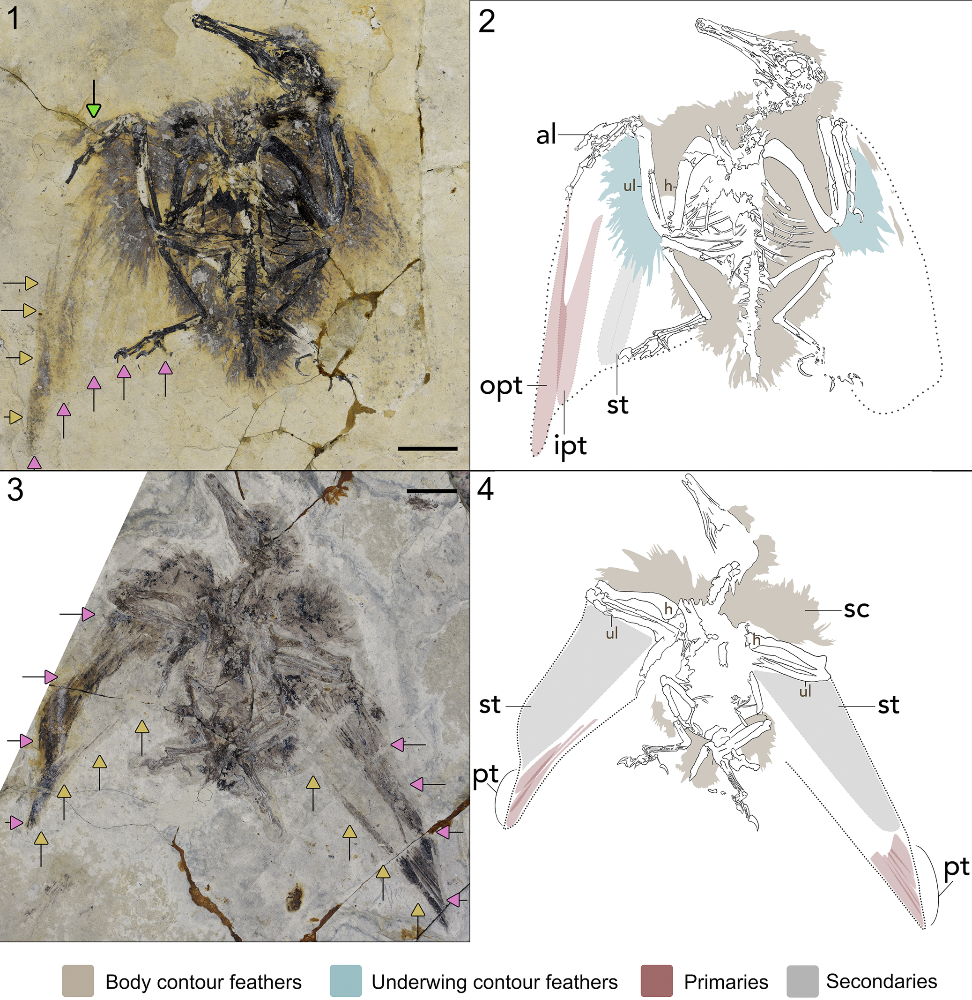

Fossilium · Publikation
Ein Urvogel ohne Federfächer: Was Longipteryx über frühes Fliegen verrät
Zwei ungewöhnlich gut erhaltene Fossilien zeigen das Gefieder eines 121 Millionen Jahre alten Vogels. Gerade dort, wo man Schwanzfedern erwarten würde, fehlt ihre Spur.

Die Entdeckung liegt im Detail
Ein Vogelfossil verrät nicht allein durch seine Knochen etwas über das Fliegen. Auch die Federn bestimmen, wie ein Tier Auftrieb erzeugt, manövriert und landet. Bei Longipteryx chaoyangensis ermöglichen zwei neu beschriebene Exemplare nun einen genaueren Blick auf diese normalerweise vergänglichen Strukturen. Die Tiere stammen aus der frühkreidezeitlichen Jiufotang-Formation im Nordosten Chinas.[1]
Die Exemplare STM 8-28 und STM 8-132 bewahren Federspuren an großen Teilen des Körpers und an den Flügeln. Dennoch zeigen sie keine erkennbaren Schwanzfedern.[1] Alexander Clark und sein Team halten deshalb für wahrscheinlich, dass diese Art tatsächlich ohne einen solchen Federbesatz am Schwanz lebte.[1] Das ist eine begründete Interpretation des Fossilmaterials, keine direkte Beobachtung eines lebenden Tieres.
Warum eine fehlende Feder überhaupt aussagekräftig ist
Fehlt einem Fossil ein Merkmal, ist damit noch nicht bewiesen, dass es dem lebenden Tier ebenfalls fehlte. Weichteile können vor der Einbettung zerfallen, beim Transport verloren gehen oder im Gestein unsichtbar bleiben.[1] Diese Erhaltungsfrage gehört hier zur eigentlichen Forschungsfrage: Ein nacktes Stück Gestein ist zunächst kein Nachweis für einen nackten Schwanz.
Aussagekräftiger wird das Muster durch den Vergleich mehrerer Exemplare. Die Studie stellt 19 Longipteryx-Fossilien zusammen.[1] Nicht alle zeigen gleich gute Weichteilerhaltung. Bei mehreren sind aber Körperfedern dokumentiert; die beiden neu beschriebenen Tiere bewahren zusätzlich gut erkennbare Schwungfederspuren.[1] Dass selbst dort kein Schwanzfederabdruck erscheint, stärkt die Schlussfolgerung. Die Autoren diskutieren einen möglichen Erhaltungsbias ausdrücklich mit, statt ihn auszuschließen.[1]
Was die Flügelfedern zeigen
Die langen äußeren Schwungfedern heißen Handschwingen, die am Unterarm sitzenden Federn Armschwingen. Ihr Längenverhältnis ist ein wichtiger Anhaltspunkt für die mögliche Flügelform. Tabelle 1 der Studie nennt für STM 8-28 längste Handschwingen von 98 Millimetern und Armschwingen von 55 Millimetern. Bei STM 8-132 sind es 120 und 71,8 Millimeter.[1] Diese Werte beschreiben die erhaltenen beziehungsweise gemessenen Federspuren, nicht eine vollständig ausgebreitete Flugsilhouette.
Die Forschenden rekonstruieren daraus eine mögliche Flügelform zwischen eher breiten und besonders langgestreckten Profilen.[1] Ein Vergleich mit heutigen Vögeln lässt mehrere Flugweisen zu. Er liefert keinen eindeutigen Film des damaligen Flügelschlags: Die fossilen Flügel sind teilweise gefaltet, und die vollständige Haltung im Flug bleibt rekonstruiert.[1] Gerade deshalb wäre es überzogen, aus einem einzelnen Verhältnis eine sichere Jagdweise oder eine genaue Fluggeschwindigkeit abzuleiten.
Ein anderer Schwanz als bei vielen Verwandten
Longipteryx gehört zu den Enantiornithes, einer vielfältigen Gruppe mesozoischer Vögel. Bei etlichen ihrer Vertreter sind verlängerte, auffällige Schwanzfedern bekannt.[1] Diese Gebilde müssen nicht dieselbe aerodynamische Aufgabe wie der auffächerbare Schwanz heutiger Vögel gehabt haben. Schmuckfunktion und geschlechtliche Unterschiede werden für verschiedene Funde diskutiert.[1]
Für Longipteryx schlägt das Team vor, dass Schwanzfedern bei beiden Geschlechtern fehlten.[1] Die Begründung beruht auf dem wiederkehrenden Befund in der verfügbaren Stichprobe. Eine Geschlechtsbestimmung jedes einzelnen Fossils ist damit nicht verbunden. Auch der genaue Ablauf von Landung und Steuerung lässt sich daraus noch nicht rekonstruieren. Der Fund erweitert vor allem das Spektrum möglicher Körper- und Gefiederformen früher Vögel.
Zähne bedeuten nicht automatisch Fischfang
Longipteryx besaß einen langen Schnauzenabschnitt mit auffälligen Zähnen an dessen Spitze. Dieser Kopf hatte früh zu Vergleichen mit fischfangenden Vögeln geführt.[2] Eine 2024 vorgestellte Untersuchung lieferte jedoch einen unmittelbareren Hinweis auf Nahrung: In zwei anderen Longipteryx-Exemplaren wurden Samen als erhaltene Mageninhalte erkannt. Das Field Museum beschreibt sie als Samen aus Früchten eines alten Baumes.[2]
Die ältere Ernährungsstudie und die neue Gefiederarbeit beantworten unterschiedliche Fragen. Zusammen zeigen sie, warum wissenschaftliche Rekonstruktionen sich verändern dürfen: Ein auffälliger Zahn oder eine vertraut wirkende Silhouette ist ein Ausgangspunkt für eine Hypothese. Erhaltene Nahrung und Federspuren können diese Vorstellung ergänzen oder korrigieren. Die Samenfunde belegen pflanzliche Nahrung bei den betreffenden Individuen; eine ausschließlich aus Früchten bestehende Ernährung der gesamten Art folgt daraus nicht.[2]
Was von der Nachricht bleibt
Die zentrale Neuigkeit lautet nicht, dass ein bisher unbekannter Vogel entdeckt wurde. Neu ist die detaillierte Beschreibung besonders gut erhaltener Gefiederreste und die daraus abgeleitete Vorstellung eines Longipteryx ohne Schwanzfedern.[1] Die Studie erschien bereits am 7. Oktober 2026; die hier verknüpfte Nachricht folgte am 27. Oktober. Fossilium übernahm das Thema am 29. Oktober.
Die offenen Fragen gehören zum Ergebnis: Wie vollständig ist die erhaltene Befiederung? Wie stark unterscheiden sich einzelne Tiere? Und wie flog ein Vogel mit dieser Kombination aus Flügeln und Schwanz? Weitere gut erhaltene Funde können die Rekonstruktion schärfen. Bis dahin ist das Bild eines frühen Vogels ohne Federfächer eine spannende, nachvollziehbar begründete Forschungsinterpretation.
Quellen
- [1] Clark et al. (2026): The plumage of Longipteryx (Aves: Enantiornithes), Journal of Paleontology (Volltext einschließlich Tabellen 1–2 und Abbildung 1; Open Access, CC BY 4.0)
- [2] Field Museum (10. September 2024): Don’t judge a fossil by its teeth (Mitteilung einer an der Forschung beteiligten Institution; ergänzender Ernährungskontext)